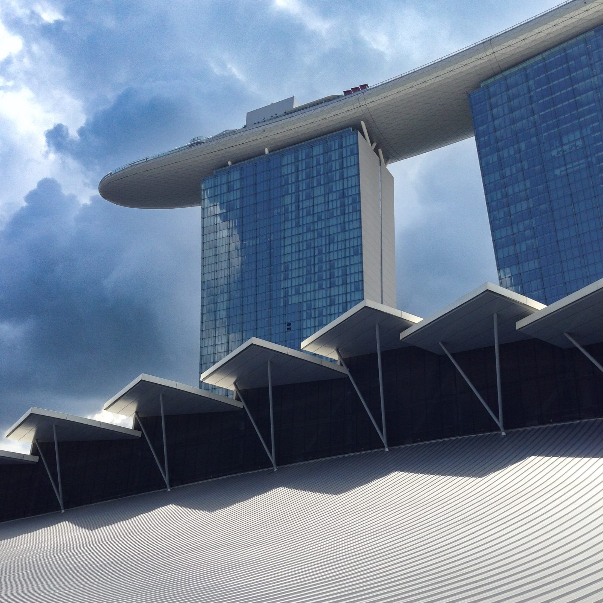
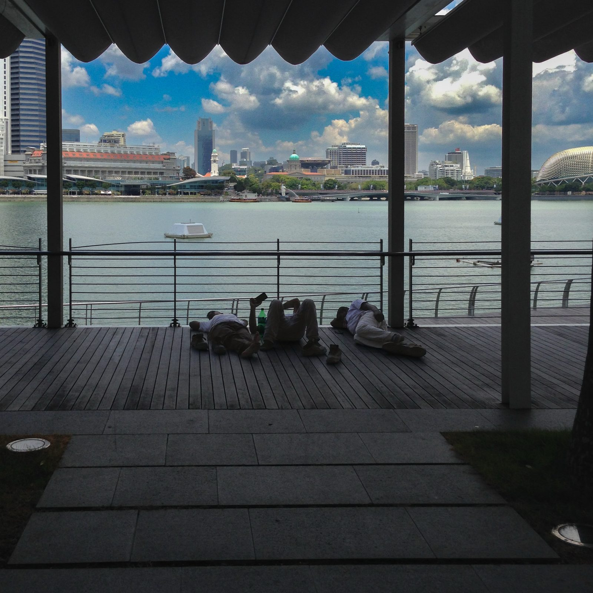
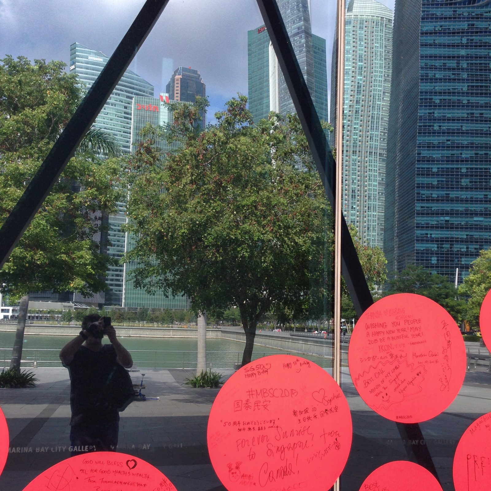
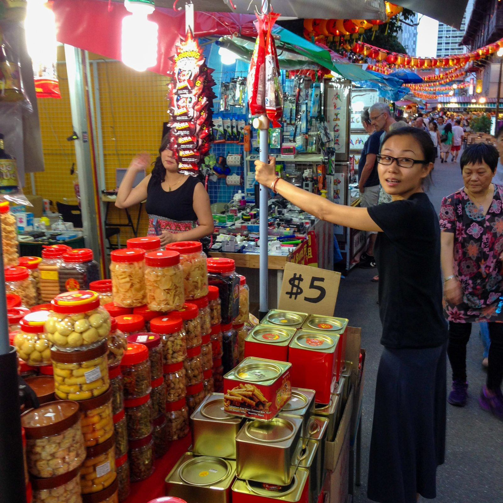
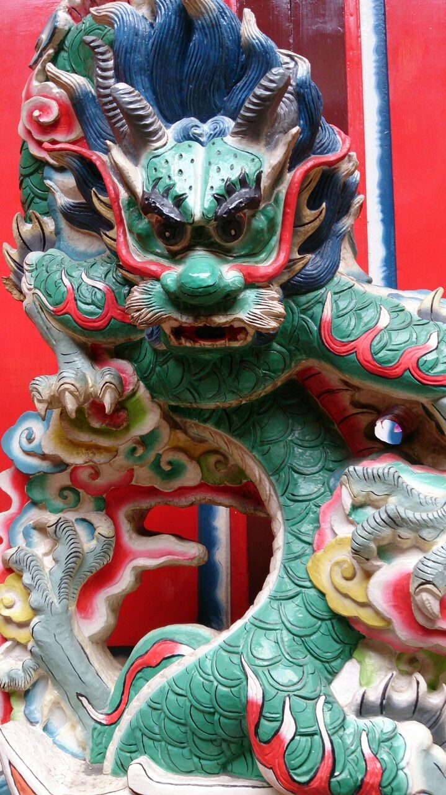
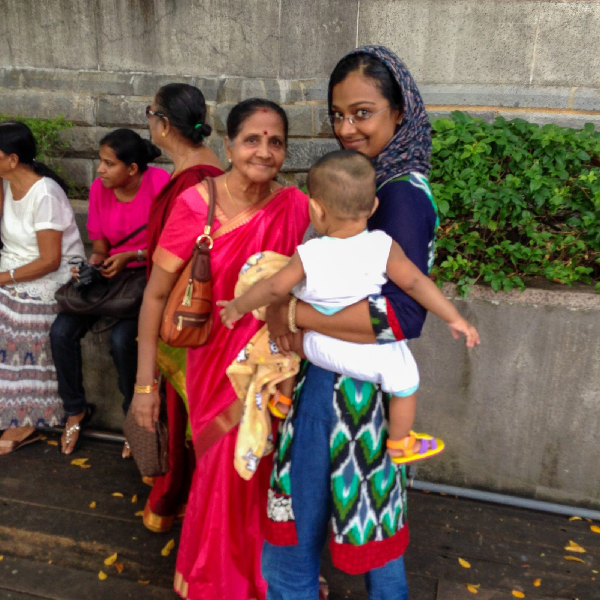
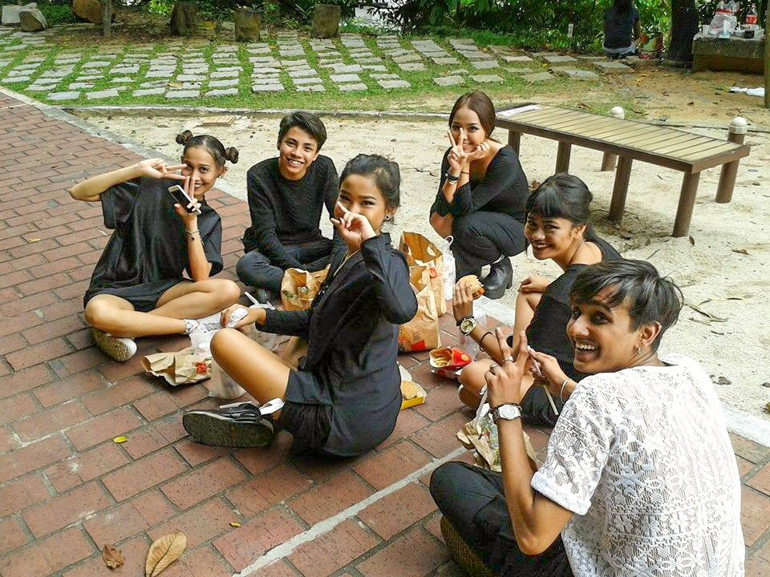

Es gibt Städte, die lassen einem Zeit zum Ankommen. Singapur gehört nicht dazu. Singapur drückt dir am Flughafen gedanklich einen Laufzettel in die Hand und sagt: viel Spaß, in einer Woche wird abgerechnet. Also gut. Einmal hoch und runter, Februar 2015. Ausgerechnet in dem Jahr, in dem die Stadt ihren fünfzigsten Geburtstag feierte. SG50 stand auf jedem zweiten Plakat. Die Stimmung war entsprechend. Eine ganze Nation im Partymodus, nur eben mit singapurischer Gründlichkeit durchorganisiert.
Mein Basislager: das Holiday Inn an der River Valley Road. Erste Liga. Bequem. Strategisch so klug gelegen, dass ich morgens in fünfzehn Minuten am Wasser stand und abends in fünfzehn Minuten wieder im Bett lag. Mehr verlangt man von einem Hotel nicht. Weniger auch nicht.
Marina Bay: Das Raumschiff ist gelandet
Fangen wir mit dem Offensichtlichen an. Das Marina Bay Sands sieht aus, als hätte jemand ein Surfbrett auf drei Wolkenkratzer gelegt und dann beschlossen, dass das jetzt Architektur ist. Drei Türme, obendrauf der SkyPark mit dem berühmtesten Infinity-Pool der Welt. 191 Meter über der Stadt. Ich habe minutenlang mit dem Kopf im Nacken davorgestanden und Perspektiven gesucht, bis mein Genick eine offizielle Beschwerde eingereicht hat.


Gleich nebenan: Gardens by the Bay. Ein botanischer Garten aus der Zukunft. Künstliche Superbäume, die nachts leuchten. Echte Bäume, die sich vermutlich fragen, warum die Konkurrenz Steckdosen hat. Zwischen Palmwedeln hindurch fotografiert wirken die Hoteltürme wie ein Dschungelfund. Tempel einer sehr gut klimatisierten Zivilisation.

Und mittendrin mein Lieblingsmotiv der ganzen Reise: drei Männer, die sich auf einem Holzdeck direkt am Wasser zur Siesta hingelegt hatten. Vor ihnen die teuerste Skyline Südostasiens. Hinter ihnen der Feierabend. Singapur gilt als Stadt der Effizienz. Wer genau hinschaut, findet überall Menschen, die die Kunst der Pause perfektioniert haben.
An der Marina Bay City Gallery hingen damals hunderte pinkfarbene Kreise mit Geburtstagswünschen aus aller Welt an den Scheiben. SG50 zum Anfassen. In einer der Scheiben mein Spiegelbild mit Kamera. Das ehrlichste Selbstporträt, das ich besitze. Man sieht nicht mich. Man sieht, was ich die ganze Zeit tue.

Chinatown: Neujahr, die Zweite
Februar 2015 hieß: Chinesisches Neujahr, das Jahr der Ziege stand vor der Tür. Chinatown hatte sich dafür komplett umdekoriert. Über der Pagoda Street und der South Bridge Road schwebten hunderte leuchtende Glücksmünzen-Laternen, als hätte jemand den Jackpot einer himmlischen Slotmachine über der Straße verteilt.


Auf dem Neujahrsmarkt stapelten sich Ananas-Törtchen bis unter die Zeltplanen. Kandierte Früchte daneben. Gebäck in roten Dosen obendrauf. Fünf Dollar, stand auf dem Pappschild. Der Blick der Verkäuferin machte klar: Das ist keine Verhandlungsbasis. Das ist ein Naturgesetz. Ich habe gekauft. Natürlich habe ich gekauft. Und in einem Tempeleingang wachte ein Drache über das Treiben. Grün geschuppt. Rot umrandet. Ein Gesichtsausdruck zwischen „Willkommen" und „Benimm dich".

Little India: Der Farbregler steht auf Anschlag
Zwanzig Minuten weiter nördlich wechselt Singapur die Tonart komplett. Little India riecht nach Jasmin, nach Curry, nach Räucherstäbchen. Aus den Läden scheppern Bollywood-Hits. Über allem thront der Gopuram eines Hindu-Tempels, ein Turm aus hunderten bunten Götterfiguren, Etage über Etage, als hätte jemand ein Wimmelbild in den Himmel gebaut. Ich stand davor und habe versucht zu zählen. Bei siebzig Figuren habe ich aufgegeben und einfach fotografiert.


Die schönsten Momente waren aber keine Gebäude. Vor dem Tempel kam ich mit einer Familie ins Gespräch. Drei Generationen, vom Baby bis zur Großmutter im leuchtend roten Sari. Viel Lachen. Wenig gemeinsames Vokabular. Am Ende ein Foto, das mir bis heute mehr bedeutet als jede Skyline. Und im Fort Canning Park, auf dem Rückweg Richtung Hotel, saß eine Gruppe junger Leute beim Picknick auf dem Boden. Alle in Schwarz. Alle mit Peace-Zeichen in die Kamera. Singapur ist eine Stadt aus vier Kulturen. Ein Lächeln ist überall dasselbe.

Night Safari: Zoo, aber nachts. Klingt verrückt, ist genial.
Und dann der Abend, auf den ich mich am meisten gefreut hatte: die Night Safari. Der erste Nachtzoo der Welt, seit 1994 in Betrieb, noch immer eine der besten Ideen, die je ein Zoodirektor hatte. Die Logik ist bestechend. Die meisten Tiere sind nachtaktiv, also warum sie tagsüber beim Schlafen anstarren? Stattdessen fährt man in offenen Bahnen durch die tropische Dunkelheit, dezent beleuchtet wie von Vollmond, und plötzlich steht da ein Tiger. Wach. Interessiert. Näher als geplant.
Fotografisch war der Abend eine Kapitulation. Dunkelheit. Keine Blitze erlaubt. Tiere mit null Verständnis für Belichtungszeiten. Also habe ich die Kamera irgendwann sinken lassen und einfach geschaut. Manchmal ist das beste Foto das, das man nicht macht. Steht auf keiner Speicherkarte, hält aber länger.
Fazit: Absolviert. Mit Auszeichnung.
Eine Woche, einmal hoch und runter: Marina Bay, Gardens by the Bay, Chinatown im Neujahrsfieber, Little India mit Farbregler auf Anschlag, Fort Canning, Night Safari. Singapur wird gern als steril belächelt. Sauber. Geregelt. Klimatisiert. Stimmt alles. Und trotzdem: Zwischen den Glücksmünzen-Laternen, zwischen den Sari-Farben, zwischen drei schlafenden Männern mit Skyline-Blick habe ich eine Stadt gefunden, die deutlich mehr Herz hat als ihr Ruf.
Nimm dir für Singapur eine ganze Woche. Das übliche Stopover-Wochenende reicht nicht. Iss dich durch die Hawker Center statt im Hotel zu frühstücken. Heb dir die Night Safari für den letzten Abend auf. Einen besseren Abschluss gibt es nicht. Wer einmal erlebt hat, wie eine Millionenstadt funktioniert, wenn wirklich alles funktioniert, schaut zuhause anders auf den Verspätungsalarm. Bis bald, kleiner roter Punkt.